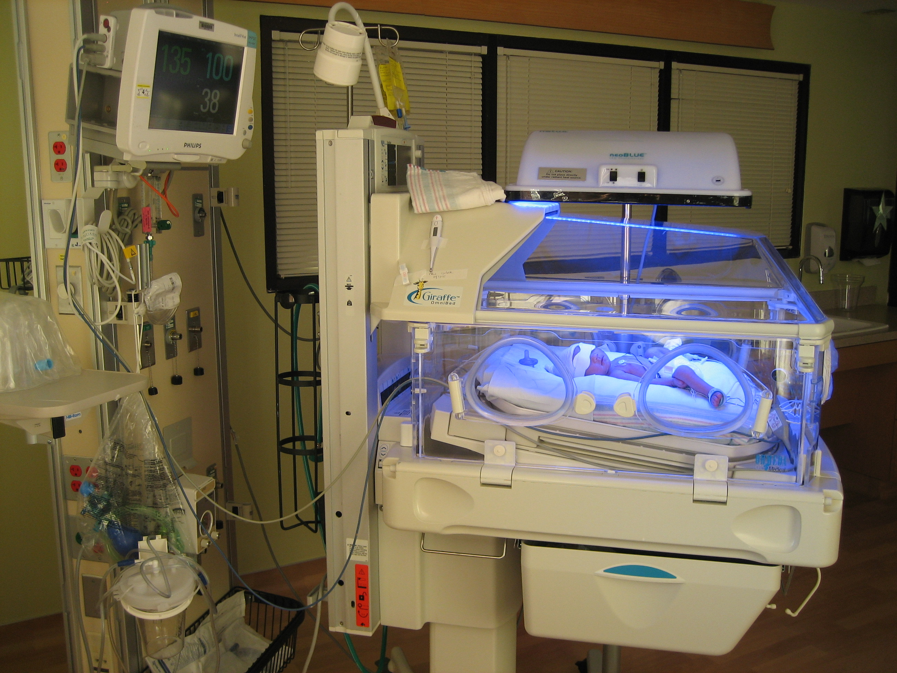

Erikson's Theory of trust vs mistrust is from 0-12 months, and his theory of Autonomy vs shame and doubt begins after that at age 1
Date of Birth: September 26, 2008
Weight: 4lbs & 14oz
Height: 19.5in
Challenges after birth:
I was breach when I was born, meaning that I didn't flip in utero. Because of this, my mom had to have a c-section to have me. Because I was born prematurely, I had a few issues due to be underdeveloped:
- I was jaundice due to my liver not being fully formed
- I had apnea due to underdeveloped lungs
- I weighed only 4lbs (you are supposed to weight around 7-8 lbs)

This is me as a baby. I was born 5 week premature by cesarean section, and spent 10 days in the NICU before I went home. The light is phototherapy that helps babies born with jaundice. When babies are born prematurly, they usually cannot produce red blood cells. The blue light helps the process of forming new red blood cells.
Months 1-3
Begins turning head in response to sounds
Most do not sleep through the night
Begin to understand cause and effect
Can begin to follow something with their eyes
Rooting reflex: Suckling in response to items in their mouth
Swallowing reflex: Swallowing and breathing are not yet coordinated
Grasp reflex: in response to touching the palm of the hand, they will grasp and hold
Stepping reflex: if held so that the feet can just touch the ground, the infant shows walking movement
They will explore the world through their senses and motor activity
They cant tell the difference between themselves and the world, so they are extremely curious
They find out that things exist even if they cannot see it (Object permanence)
Attachment Theory:
Attachment is the emotional bond you form with another person. Human nature causes us to develop these bonds as babies so we stay close to the mother giving us a better chance of survival.
Secure Attachment - Not worrying - Crying when mother leaves - Welcoming her back - Happily continues playing
Insecure Attachment - Avoidance - Not caring if mother leaves - Making little contact upon return - Treating strangers the same as mom
Insecure Attachment - Anxiety - Ignoring mother upon reunion - Protesting loudly if she leaves - May cry to be picked up then demand to be put down
Causes of an Insecure Attachment - Abandonment or deprevation of needs - Abusive, neglectful or erratic parenting - Genetic influences - Changing, stressful influences in childs environment
Erikson's Theory: Trust vs Mistrust (Months 0-12)
- I am vulnerable and depend on other to meet my needs - If my needs are not met, I will develop mistrust - If my needs are met, I will develop trust - This is the stage when I learn to trust the world
Erikson's Theory: Autonomy vs Shame and Doubt (Years 1-3)
- If given independence, they will develop autonomy in their choices and opinions - If you dont allow independence, the child will feel shame and self doubt - If they are not independent, they won't feel confident in choices they make later in life - This is the stage when they learn basic will
Months 4-11
- Vocalizes in response to stimulus
- Can sit up on thier own
- First teeth begin to come in (My first tooth was around 4 months)
- Uses more fine motor skills like grabbing and reaching
- Smiles more at interesting stimuli
- Stops crying at the sound of the primary caregivers voice
- Turns head in direction of noise
- Begins eating pureed food (🎃I loved pumpkin🎃)
- Begins responding to their name
- Begins forming sounds similar to actual words
- Begins expressing emotions without crying
- Can identify strangers
- Begins feeding themselves
- Starts becoming more curious and exploritory
- Can identify if an object has fallen, even if it doesn't make a sound
- Says their first word (My first word was "dada")
White space
Months 12-24
This period of 1-2 years is usually when all the big milestones happen
- Start taking their first few steps (My first steps were around 13 months)